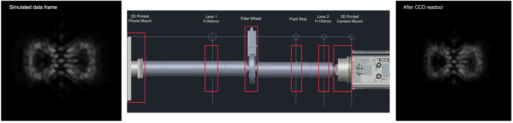

Linear-mode avalanche photodiodes
Exoplanet imaging requires very high detector performance in order to detect the intrinsically faint planets. In the infrared, this is particularly challenging as the workhorse HxRG arrays (developed here at U. Hawaii) are simply too noisy to be able to detect Earth-like planets.
 LmAPD detector array in housing.
LmAPD detector array in housing.
|
We are currently working to develop the next generation of infrared detectors, the HgCdTe linear-mode avalanche photodiode arrays (Lm-APDs), for ground and space astronomy. These arrays are able to operate at rapid frame rates, with extremely low readout noise and dark current rates, nearly an order of magnitude better than the current state-of-the-art. Future exoplanet observatories such as HabEx and LUVOIR are baselining these sensors for use at wavelengths ~1 micron and longer, which are key spectral regions for biosignature identification (H2O, CO2, CH4, etc).
Our group is currently working to mature a large-format version of these remarkable arrays and to realize their full potential as the future of low-noise infrared astronomy.
Optical characterization with O-LED screens
Modern OLED-based cell phone screens have a lot of desirable properties for detector characterization, including high dynamic range, high spatial resolution, near-Poisson limited stability, and the ability to generate nearly
arbitrary optical scenes. During my time at JPL, I designed and built an instrument using a hacked smartphone that allowed our group to thoroughly test and characterize the EMCCD detector for the WFIRST space coronagraph, one of the most sensitive detectors ever planned for space. Multiple groups are now using copies of this device, including at JPL, ESA (for Euclid), Virginia Tech, and the Open University.
|

Optical scene generator CAD drawing. The left panel shows the desired image, the right shows the readout from the camera, closely reproducing the complex integral field spectrograph data simulation.
|
We are currently building another one of these devices to assess their use as astrometric calibrators. The usual tool for astrometric calibration (that is, measuring the internal distortions of the telescope's instruments) is a plate with holes drilled in it and illuminated from behind. The precision of these holes is set by machining tolerances, which are not good enough for the most demanding astronomical applications. We are hopeful that the OLED screens will do better, as they are made using industrial photolithographic processes.